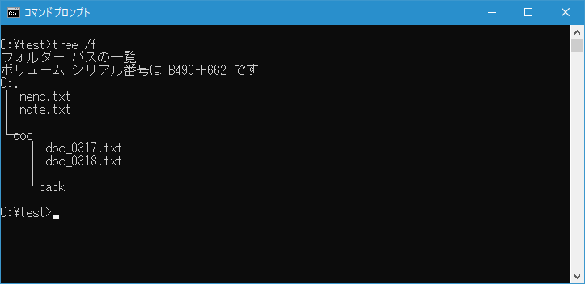

ファイルの移動とディレクトリ名の変更(MOVE)
１つまたは複数のファイルを移動させることができる MOVE コマンドの使い方について解説します。また MOVE コマンドはディレクトリ名の変更を行うことができます。
MOVEコマンドの使い方
MOVE コマンドを実行すると1つまたは複数のファイルを移動することができます。コピーとの違いは、コピーはコピー元のファイルはそのまま残りますが、移動の場合は移動元のファイルは削除されます。書式は次の通りです。
MOVE [/Y | /-Y] [ドライブ:][パス]ファイル名1[,...] 受け側
また MOVE コマンドはディレクトリ名の変更でも使用します。書式は次の通りです。
MOVE [/Y | /-Y] [ドライブ:][パス]ディレクトリ名1 ディレクトリ名2
それぞれ使い方を確認します。
1つのファイルを移動する
例えばカレントディレクトリにある memo.txt を C:\test\back ディレクトリへ移動するには次のように実行します。
move memo.txt C:\test\back
「1 個のファイルを移動しました。」と表示されてファイルの移動が完了しました。
TREE コマンドを使って MOVE コマンド実行前のディレクトリツリーを表示すると次のようになっていました。
MOVE コマンド実行後にあらためて確認してみると、移動元のファイルが削除され移動先のディレクトリに同じ名前でファイルが作成されていることが確認できます。

-- --
1つのファイルを移動する時に、移動後のファイル名を指定することで名前を変更してファイルを移動させることができます。例えばカレントディレクトリにある memo.txt を C:\test\back ディレクトリへ memo_old.txt という名前に変更して移動するには次のように実行します。
move memo.txt C:\test\back\memo_old.txt
MOVE コマンド実行後に確認してみると、指定した名前で移動先へファイルが移動していることが確認できます。
複数のファイルを移動する
ワイルドカードを使用することで複数のファイルを別のディレクトリに移動することができます。例えばカレントディレクトリにある拡張子が.txt のファイルをすべて c:\test\back ディレクトリに移動させるには次のように実行します。
move *.txt c:\test\back
TREE コマンドを使って MOVE コマンド実行前のディレクトリツリーを表示すると次のようになっていました。
MOVE コマンド実行後にあらためて確認してみると、移動元にある拡張子が .txt のファイルが削除され移動先のディレクトリに同じ名前でファイルが作成されていることが確認できます。
移動先に同じ名前のファイルがあった時に上書き保存するかどうかの確認を行わない
MOVE コマンドを使ってファイルを移動する場合、移動先に同じ名前のファイル名が既に存在していた場合、上書きして保存するかどうかの確認が行われます。例えばカレントディレクトリにある memo.txt を c:\test\back ディレクトリに移動しようとしたときに、移動先のディレクトリに同じ名前の memo.txt が存在すると上書き保存するかどうかの確認が行われます。
move memo.txt c:\test\back
上書きする場合は[y]キーを押したあとで[Enter]キーを押します。上書きはせずに移動を行わない場合は[n]キーを押したあとで[Enter]キーを押します。
このようにデフォルトでは移動先に同じファイル名があった場合に上書きするかどうかの確認をしますが、確認を行わずに上書きで移動する場合には「/Y」オプションを使って次のように実行します。
move /y memo.txt c:\test\back
移動先に同じファイル名のファイルがあっても確認せずに上書きで移動が行われました。
ディレクトリ名を変更する
MOVE コマンドはファイルの移動の他にディレクトリ名の変更でも使用されます。例えばカレントディレクトリにある doc ディレクトリの名前を document に変更する場合には次のように実行します。
move doc document
ディレクトリの名前が document に変更になりました。名前が変更されるだけなので、ディレクトリの中にあったファイルやサブディレクトリは何も変更がありません。
TREE コマンドを使って MOVE コマンド実行前のディレクトリツリーを表示すると次のようになっていました。

MOVE コマンド実行後にあらためて確認してみると、ディレクトリ名が新しい名前に変更になった以外は何も変わっていないことが確認できます。
-- --
MOVE コマンドを使ってファイルを移動する方法、そしてディレクトリ名を変更する方法について解説しました。
( Written by Tatsuo Ikura )

著者 / TATSUO IKURA
初心者～中級者の方を対象としたプログラミング方法や開発環境の構築の解説を行うサイトの運営を行っています。